Learning Objectives
After completing this lesson, you’ll be able to:
- Explain custom transformer versions.
- Create a new custom transformer version.
- Edit a specific custom transformer version.
- Explain the relationship between custom transformer versions and FME versions.
- Update a custom transformer version.
Resources
FME allows tracking versions for external file definitions of custom transformers (linked transformers). Users can save a new version when they edit a custom transformer definition.
In that way, a single FMX file can contain multiple versions of the same custom transformer.
Versioning allows the author of a custom transformer to revert to a previous definition if needed. It also allows users to create a different definition for each version of FME. The custom transformer remains backward-compatible with older FME versions but has enhanced functionality in newer versions.
After editing an unversioned custom transformer, clicking the Save button issues the following prompt:
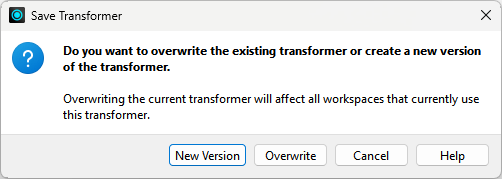
The two versioning options are to Overwrite the existing version or create a New Version.
Essentially, the prompt asks whether to activate versioning. Clicking New Version versions the transformer and saves the edits as version 2. Note that creating a new version does not create a separate FMX file; instead, it creates a different version of the transformer within the same FMX file.
The title bar in Workbench illustrates the version number of a custom transformer file:
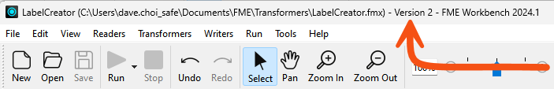
The transformer remains unversioned if you choose Overwrite in the Save Transformer dialog.
Opening a versioned custom transformer in Workbench issues the following prompt:
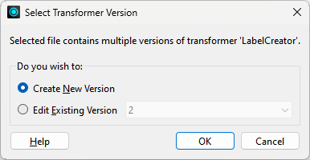
This prompt asks which version you wish to edit or whether you want to start with a new version. You can:
- Create a new version to edit
- Continue making edits to the existing version
- Make edits to an older version (particularly useful when you can only use that version with an older FME release)
It’s essential to know that this dialog is the only way to create a new version. Clicking the save button only saves updates to the currently open version. To create a new version, you must close and reopen the file, causing the Select Transformer Version dialog to appear.
Each version of a custom transformer is associated with a particular FME version. You can choose to make edits to a transformer created in an older version of FME, but you will receive a warning message:
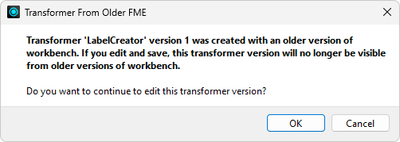
Here, a user created version 1 with FME 2020, and the author is attempting to edit it in FME 2022. Should they proceed, version 1 of the transformer will no longer be valid for use in FME 2020.

Sometimes, you can get confused about these dialogs (well, I can), so let me set you straight:
When you first export a custom transformer, you don’t get the Select Version dialog (because the transformer is still unversioned). You also don’t get the Save Version dialog (because why create a new version when you just exported this transformer?)
When you open the definition (FMX file) the next time, you again don’t get the Select Version dialog (because it is still unversioned). But you will get the Save Version dialog when you save the changes, allowing you to make the transformer version.
From that point on, you’ll always get the Select Version dialog when you open the FMX file (because the transformer is now versioned), but for the same reason, you’ll never get the Save Version dialog when you save edits.
Suppose you turn on the option to display the transformer version (Utilities > FME Options > Workbench > Transformers > Display transformer version). In that case, each linked custom transformer displays its version number in the summary annotation:
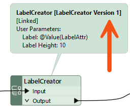
When FME detects that a new version is available (i.e., the author has made edits and saved them as a new version) and that this version is compatible with the current FME version, then an option appears on the context menu to allow an update:
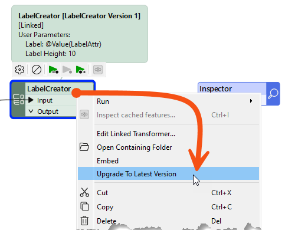
Choosing to upgrade means the transformer becomes linked to the latest version, and the summary annotation updates to reflect the change.
You can also upgrade eligible custom transformers in the Navigator, just like you upgrade FME transformers when moving to a new FME version. Custom transformers will appear under Upgradable Transformers, just like regular transformers. You can learn more about upgrading FME transformers in the documentation.
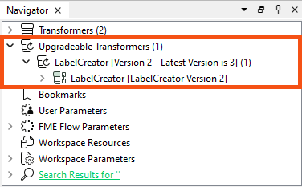
You can upgrade multiple transformers simultaneously. Learn more.
Exercise
Sven has a working AverageLengthCalculator custom transformer, and he wants to use versioning so that every workspace using it can pick up his improvements. His workspace reads bike routes data and writes average route lengths. Before he shares the transformer with his team, he wants to add geometry filtering as a second version.
In this exercise, you will:
- Display the version number of a linked custom transformer in Workbench.
- Create a second version of a custom transformer by editing and saving its FMX definition.
- Upgrade a custom transformer instance in a workspace to the latest version.
1) Open Starting Workspace
You will work in two Workbench sessions throughout this exercise, one for the workspace and one for the custom transformer definition. Keep both open so you can move between them.
- Start FME Workbench (2026.2 or later).
- Open the starting workspace (C:\FMEData\Workspaces\AdvancedDataTransformation\use-versioning-with-custom-transformers.fmw).
- In a second FME Workbench session, open AverageLengthCalculator.fmx from the location you saved it.
- On Windows, the default location is C:\Users\YourUserName\Documents\FME\Transformers.
Workbench can show the version number of every linked custom transformer in its summary annotation. With this option on, you can confirm which version an instance uses before and after you upgrade it.
- On the menu bar, select Utilities > FME Options.
- In FME Options, select Workbench.
- Expand Transformer Options.
- Select Display transformer version.
- Click OK.
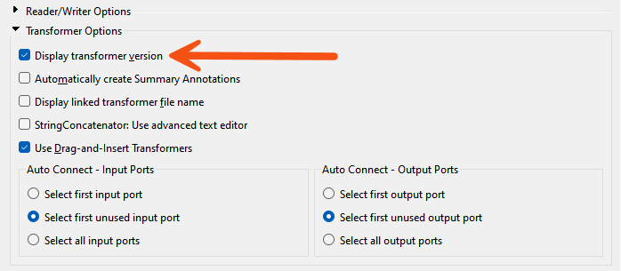
REDO
A new instance of the AverageLengthCalculator links to the definition in the FMX file. Confirming which version it starts at makes the upgrade you do later easy to spot.
- In the Workbench session where the workspace is open, use Quick Add or the Transformer Gallery to add an AverageLengthCalculator after the LineCombiner.
- The instance is linked by default, which is what you want here.
- Hover the cursor over the AverageLengthCalculator.
- The pop-up text shows Version 1.
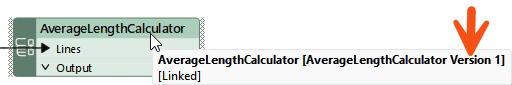
Let's make a real improvement to the transformer and save a new version. Filtering by geometry keeps the transformer from measuring the length of point features and other non-linear geometries.
- In the FMX editing session, add a GeometryFilter in front of the LengthCalculator.
- In the GeometryFilter parameters, set up the following:
- Mode: Detailed
- Output Ports: IFMELine and IFMEArc, both found under IFMECurve > IFMESegment
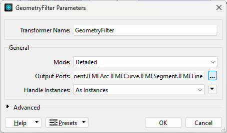
- Connect the IFMELine and IFMEArc ports to the LengthCalculator.
- On the canvas, right-click and select Insert Transformer Output.
- Name the new output port <Rejected>.
- Connect the <Unfiltered> port to <Rejected>.
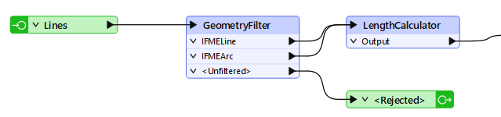
- Click Save.
- In the Save Transformer dialog, click New Version.
- If the Save Transformer dialog does not appear, you did not close the first editing session. Undo your changes back to the original definition, without the GeometryFilter and the <Rejected> output port, and save again. Then close the FMX file, reopen it, and redo your changes. FME prompts you to create a new version this time.
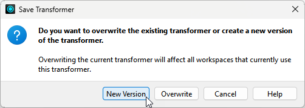
- In the Workbench title bar, verify that it says Version 2.
The workspace still holds the version 1 instance you placed earlier. Refreshing the Transformer Gallery lets FME find the new definition so you can upgrade that instance.
- Return to the Workbench session where the workspace is open.
- On the Transformer Gallery, click the Refresh icon.
- FME scans all custom transformers and finds the new version you just created.
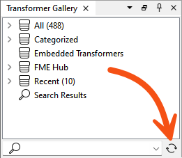
- On the canvas, right-click the AverageLengthCalculator and select Upgrade To Latest Version.
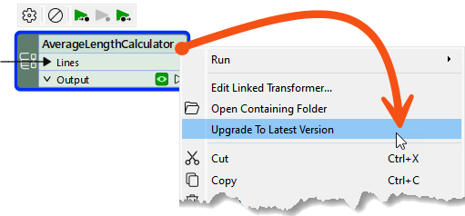
- Observe that the AverageLengthCalculator now has a <Rejected> port, indicating a successful upgrade.
- Hover the cursor over the AverageLengthCalculator.
- The pop-up text shows Version 2.
Tips
- Now that you have this custom transformer, you have several options for sharing it:
- Put the FMX file in a shared folder, then have other users point their FME at that folder with Utilities > FME Options > Default Paths.
- Send the FMX file to other users, for example by email, and have them install it on their machines. They can install it by double-clicking the file or by saving it to their default FME resource folder.
- Publish the transformer to FME Flow or the FME Hub for you and others to use there.